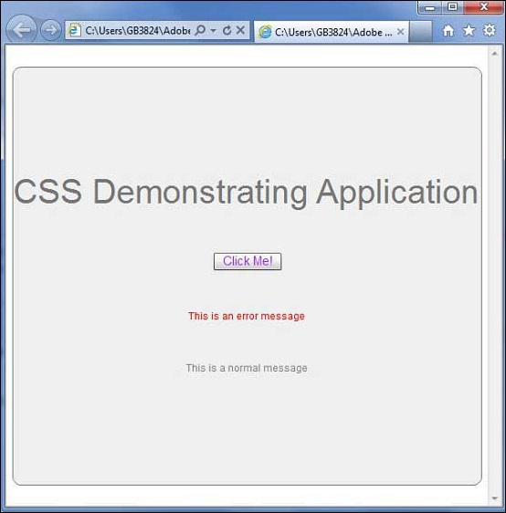

Flex - Style with CSS¶
Flex supports the use of CSS syntax and styles to apply to its UI controls in the same way as CSS to HTML components.
1: Using External Style Sheet File¶
You can refer to a style sheet available in the class path of the application. For example consider Style.css file in com/tutorialspoint/client folder where HelloWorld.mxml file also lies.
/* CSS file */
@namespace s "library://ns.adobe.com/flex/spark";
@namespace mx "library://ns.adobe.com/flex/mx";
...
.container {
cornerRadius :10;
horizontalCenter :0;
borderColor: #777777;
verticalCenter:0;
backgroundColor: #efefef;
}
Then css file can be referred by following code snippet
<fx:Style source = "/com/tutorialspoint/client/Style.css" />
Assign styles to UI component using styleName property
<s:BorderContainer width = "500" height = "500" id = "mainContainer"
styleName = "container">
...
</s:BorderContainer>
2: Using Styles Within Ui Container Component¶
You can define styles within UI container component using <fx:Style> tag
Class Level Selector
<fx:Style>
@namespace s "library://ns.adobe.com/flex/spark";
@namespace mx "library://ns.adobe.com/flex/mx";
/* class level selector */
.errorLabel {
color: red;
}
</fx:Style>
Assign styles to UI component using styleName property.
<s:Label id = “errorMsg” text = “This is an error message” styleName = “errorLabel” />
Id Level Selector
Style UI component using id selector.
<fx:Style>
/* id level selector */
#msgLabel {
color: gray;
}
</fx:Style>
<s:Label id = "msgLabel" text = "This is a normal message" />
Type Level Selector¶
Style one type of UI Component in one GO.
<fx:Style>
/* style applied on all buttons */
s|Button {
fontSize: 15;
color: #9933FF;
}
</fx:Style>
<s:Button label = "Click Me!" id = "btnClickMe"
click = "btnClickMe_clickHandler(event)" />
Flex Style with CSS Example¶
Let us follow the steps to check CSS styling of a Flex application by creating a test application −
Create a project with a name HelloWorld under a packagecom.tutorialspoint.client as explained in the Flex - Create Application chapter.
Modify Style.css, HelloWorld.mxml as explained below. Keep rest of the files unchanged.
Compile and run the application to make sure business logic is working as per the requirements.
Following is the content of the modified CSS file src/com.tutorialspoint/Style.css.
/* CSS file */
@namespace s "library://ns.adobe.com/flex/spark";
@namespace mx "library://ns.adobe.com/flex/mx";
.heading
{
fontFamily: Arial, Helvetica, sans-serif;
fontSize: 17px;
color: #9b1204;
textDecoration:none;
fontWeight:normal;
}
.button {
fontWeight: bold;
}
.container {
cornerRadius :10;
horizontalCenter :0;
borderColor: #777777;
verticalCenter:0;
backgroundColor: #efefef;
}
Following is the content of the modified mxml file src/com.tutorialspoint/HelloWorld.mxml.
<?xml version = "1.0" encoding = "utf-8"?>
<s:Application xmlns:fx = "http://ns.adobe.com/mxml/2009"
xmlns:s = "library://ns.adobe.com/flex/spark"
xmlns:mx = "library://ns.adobe.com/flex/mx"
width = "100%" height = "100%" minWidth = "500" minHeight = "500"
initialize = "application_initializeHandler(event)">
<!--Add reference to style sheet -->
<fx:Style source = "/com/tutorialspoint/client/Style.css" />
<!--Using styles within mxml file -->
<fx:Style>
@namespace s "library://ns.adobe.com/flex/spark";
@namespace mx "library://ns.adobe.com/flex/mx";
/* class level selector */
.errorLabel {
color: red;
}
/* id level selector */
#msgLabel {
color: gray;
}
/* style applied on all buttons */
s|Button {
fontSize: 15;
color: #9933FF;
}
</fx:Style>
<fx:Script>
<![CDATA[
import mx.controls.Alert;
import mx.events.FlexEvent;
protected function btnClickMe_clickHandler(event:MouseEvent):void {
Alert.show("Hello World!");
}
protected function application_initializeHandler(event:FlexEvent):void {
lblHeader.text = "CSS Demonstrating Application";
}
]]>
</fx:Script>
<s:BorderContainer width = "560" height = "500" id = "mainContainer"
styleName = "container">
<s:VGroup width = "100%" height = "100%" gap = "50"
horizontalAlign = "center" verticalAlign = "middle">
<s:Label width = "100%" id = "lblHeader" fontSize = "40"
color = "0x777777" styleName = "heading" />
<s:Button label = "Click Me!" id = "btnClickMe"
click = "btnClickMe_clickHandler(event)" />
<s:Label id = "errorMsg"
text = "This is an error message" styleName = "errorLabel" />
<s:Label id = "msgLabel" text = "This is a normal message" />
</s:VGroup>
</s:BorderContainer>
</s:Application>
Once you are ready with all the changes done, let us compile and run the application in normal mode as we did in Flex - Create Application chapter. If everything is fine with your application, this will produce following result: [ Try it online ]
